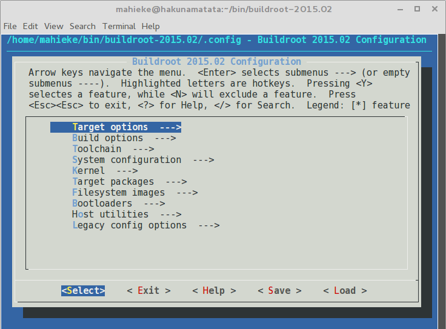

Buildroot
A collection of Makefiles and bash scripts in order to build toolchains, Linux-kernels, bootloaders and root filesystems through cross-compilation. It can be configured via an ncurses-based menu.
Workflow
To start working with buildroot the user simply downloads the latest stable buildroot version as tarball or retrieves the development state via git. The package requirements for buildroot must be installed before the user is able to use buildroot.
To start working with buildroot the user simply types make menuconfig to
create a configuration via a ncurses-based configuration menu similar to the
Linux configuration menu.

This configuration will manage the following steps:
Target options:
Options which depend on the target architecture, like:
- Select the target architecture
- Application Binary Interface
Build options:
Several options for the build procedure, e.g.:
- Selecting the download locations and mirrors
- Selecting a directory for patchs
- gcc optimization
Toolchain:
The user can decide whether buildroot should build its own toolchain or should use an external toolchain. For the a own builded toolchain there are several options, e.g.:
- Selecting the kernel header version
- Selecting the C library
- Binutil options
- GCC options
System configuration:
The user can configure several options for the built system, e.g.:
- System hostname
- Password encoding and root password
- Selecting a Root FS skeleton
Kernel:
All kernel related configurations, e.g.:
- Kernel version
- Kernel patches
- Kernel configuration file
- Kernel binary format
Target packages:
Selecting packages which will be installed with busybox on the target Root FS. Busybox combines many common unix utilities into a single executable. The provided packages for busybox are devided into several groups, e.g.:
- Audio and video applications
- Development tools
- Hardware handling
Filesystem images:
Filesystem related configurations for the Root FS image, e.g.:
- Filesystem type (ext2/3/4, jffs2, etc.)
- Building a cpio archive of the Root FS
- Building a tarball of the Root FS
Bootloaders:
User can select the bootloader which should be build for the target system, the buildroot configuration provides several bootloaders, e.g.:
- Uboot and configuration (e.g. version, patches, binary format)
- Barebox
- Atmel related bootloaders
Host utilities:
User can select various utilities for the host building system, e.g.:
- Uboot tools
- Tools for different filesystems
Legacy config options:
Shows the user which packages were removed or renamed from the buildroot configuration. The list is divided in subsections for each buildroot version.
After going through the buildroot configuration a .config file will be
saved. With this config file the user can build the configured system with the
make command. Buildroot will download all required software components and
compile them for the target system. If no corss-toolchain was given, the tool
will build the toolchain first, and compile the other software with it.
The user can also configure several package by itself after configuring buildroot. The following packages can be configured via the ncurses configuration procedure:
Configuring BusyBox:
make busybox-menuconfig
This allows the user to configure BusyBox in more detail.
Configuring Linux kernel:
make linux-menuconfig
This allows the user to make subsequent changes on the configuration the downloaded kernel with the standard configuration procedure of the Linux kernel.
Configuring uClibc:
make uclibc-menuconfig
This allows the user to configure uclibc in te same way as for BusyBox.
Result
Buildroot is a nice tool to build an own Distribution for different target systems. The way of configuring the Distribution is well known and intuitive, for people who had contact with building a Linux kernel. Newbies has to read a lot of documentation to build their first own distribution for a target device. The user must be willing to learn a lot about Linux configuration and the hardware of the target system.
The Buildroot tool is able to provide a lot of packages for the target system via BusyBox. Every package is built with the cross-toolchain on the host system. There are often problems with cross-compiling software packages. Often there has to be done patches on the source code of a package to get it cross-compiled. This makes can make it hard to add new packages to BusyBox. A short instruction how to add a new package (called applet) can be found here.
Overview
| Criteria | Result | Notes |
|---|---|---|
| Cross-target support | YES | Manual configuration necessary |
| Package management | LIMITED | Difficult to extend |
| Buildroutine Automation | YES | Uses the well known configuration procedure like Linux configuration |
| Deployment | NO | System must be installed by hand on the embedded device |